Dependency Graph v0.1
Use this as a topology map: it shows upstream kernels, core modules, practical layers, and how outputs feed back into New Topography. It should not be treated as an execution sequence.

Primary Flow
Semantic Geometry Kernel ↓ Concavity / Y-Axis / Pre-Label ↓ Band / Woven Memory / Structural Judgment / Field Closure ↓ Band Governance / Emotion / Observation / Meaning Faucet ↓ Operations / Archive / Differential Analysis / Ethics ↓ New Topography update